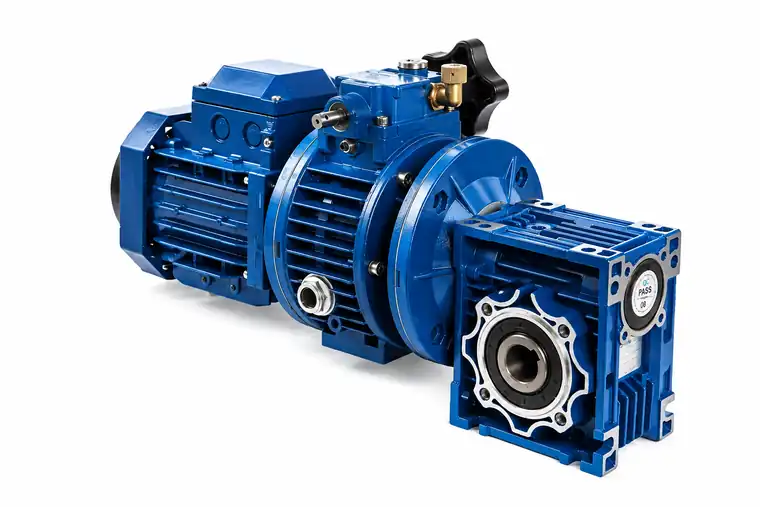
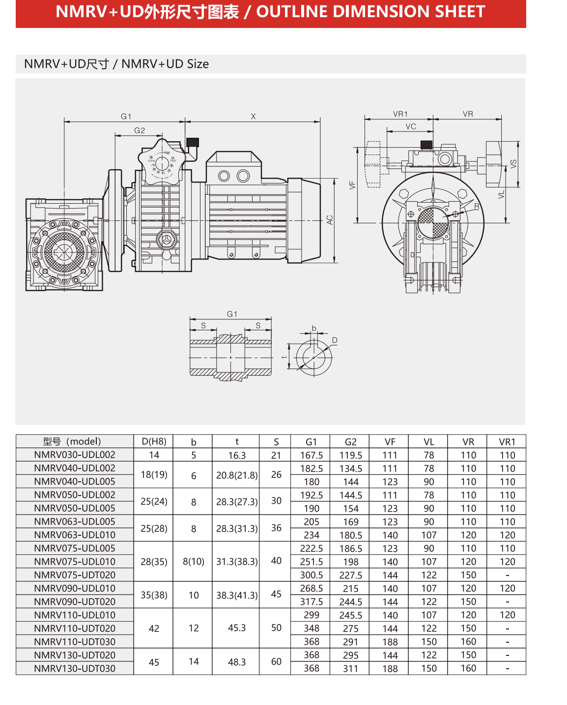

INTEGRATED VARIABLE-SPEED DRIVE
NMRV Worm Gearbox + UDL Variator + Three-Phase Motor
This SMK drive assembly combines three functions in one compact system: a three-phase motor supplies power, the UDL mechanical variator provides manual output-speed adjustment, and the NMRV worm gearbox delivers additional reduction, higher torque and a right-angle output.
- Manual speed adjustment for process control
- Compact right-angle NMRV worm gearbox
- Industrial three-phase motor input
- Multiple gearbox and variator combinations
- Selection and mounting support from SMK
Typical Applications
Suitable applications include conveyors, packaging machinery, mixers, dosing equipment, food-processing machines, printing equipment and production lines that need convenient mechanical speed adjustment without changing the complete drive arrangement.
How to Select the Correct Combination
Provide the required minimum and maximum output speed, load torque, motor power, voltage, frequency, duty cycle, mounting position, output-shaft requirement and ambient conditions. SMK will check the NMRV size, UDL or UDT variator model and three-phase motor configuration as one matched system.
Outline Dimension Sheet
NMRV + UDL / UDT combinations; all listed dimensions are in millimetres.

| Model | D (H8) | b | t | S | G1 | G2 | VF | VL | VR | VR1 |
|---|---|---|---|---|---|---|---|---|---|---|
| NMRV030-UDL002 | 14 | 5 | 16.3 | 21 | 167.5 | 119.5 | 111 | 78 | 110 | 110 |
| NMRV040-UDL002 | 18 (19) | 6 | 20.8 (21.8) | 26 | 182.5 | 134.5 | 111 | 78 | 110 | 110 |
| NMRV040-UDL005 | 18 (19) | 6 | 20.8 (21.8) | 26 | 180 | 144 | 123 | 90 | 110 | 110 |
| NMRV050-UDL002 | 25 (24) | 8 | 28.3 (27.3) | 30 | 192.5 | 144.5 | 111 | 78 | 110 | 110 |
| NMRV050-UDL005 | 25 (24) | 8 | 28.3 (27.3) | 30 | 190 | 154 | 123 | 90 | 110 | 110 |
| NMRV063-UDL005 | 25 (28) | 8 | 28.3 (31.3) | 36 | 205 | 169 | 123 | 90 | 110 | 110 |
| NMRV063-UDL010 | 25 (28) | 8 | 28.3 (31.3) | 36 | 234 | 180.5 | 140 | 107 | 120 | 120 |
| NMRV075-UDL005 | 28 (35) | 8 (10) | 31.3 (38.3) | 40 | 222.5 | 186.5 | 123 | 90 | 110 | 110 |
| NMRV075-UDL010 | 28 (35) | 8 (10) | 31.3 (38.3) | 40 | 251.5 | 198 | 140 | 107 | 120 | 120 |
| NMRV075-UDT020 | 28 (35) | 8 (10) | 31.3 (38.3) | 40 | 300.5 | 227.5 | 144 | 122 | 150 | — |
| NMRV090-UDL010 | 35 (38) | 10 | 38.3 (41.3) | 45 | 268.5 | 215 | 140 | 107 | 120 | 120 |
| NMRV090-UDT020 | 35 (38) | 10 | 38.3 (41.3) | 45 | 317.5 | 244.5 | 144 | 122 | 150 | — |
| NMRV110-UDL010 | 42 | 12 | 45.3 | 50 | 299 | 245.5 | 140 | 107 | 120 | 120 |
| NMRV110-UDT020 | 42 | 12 | 45.3 | 50 | 348 | 275 | 144 | 122 | 150 | — |
| NMRV110-UDT030 | 42 | 12 | 45.3 | 50 | 368 | 291 | 188 | 150 | 160 | — |
| NMRV130-UDT020 | 45 | 14 | 48.3 | 60 | 368 | 295 | 144 | 122 | 150 | — |
| NMRV130-UDT030 | 45 | 14 | 48.3 | 60 | 368 | 311 | 188 | 150 | 160 | — |
Values in parentheses indicate alternative shaft dimensions shown in the supplied outline sheet. Confirm the final drawing for the ordered configuration.
Frequently Asked Questions
What is an NMRV + UDL variable speed gear motor?
It combines a three-phase motor, a UDL mechanical speed variator and an NMRV right-angle worm gearbox in one drive assembly.
What information is needed for selection?
Send motor power, voltage and frequency, output-speed range, torque, duty cycle, mounting position, shaft dimensions and environment.
Can the UDL speed be adjusted while operating?
Yes. Adjust the UDL variator while the drive is running and follow the operating instructions supplied with the unit.